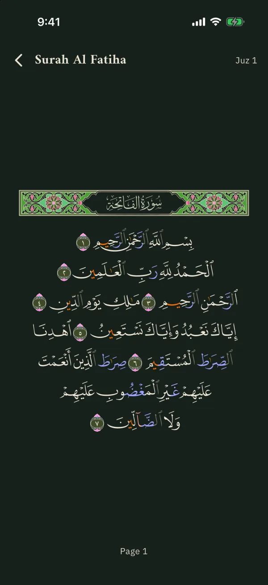
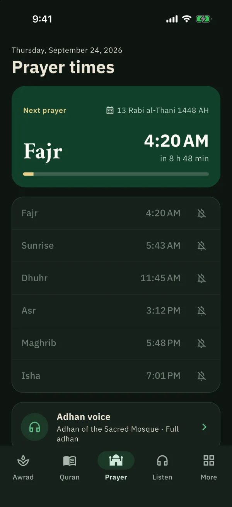

Your daily wird, the Quran and prayer times in one app.
Wirdi (وِردي) brings awrad and adhkar, the Quran with recitations and tafsir, and prayer times with the adhan into one Arabic and English app. I designed and built it on my own, from the architecture to the native Android parts.



The problem
A daily wird usually means several apps: one for adhkar, one for the Quran, one for prayer times and the adhan. Wirdi puts them in one place, arranged by need: provision, healing, relief from distress, istikhara and more, with a counter for each zikr.
What I built
- Awrad and your own wird: awrad and adhkar by need with a counter, favourites, search, and a personal wird built from the awrad and the Quran with a reminder at the time you choose.
- The Quran: a Mushaf page reader, surahs, juz and bookmarks, recitations from chosen reciters that keep playing in the background, live Quran radio from Cairo and Saudi Arabia, and tafsir read ayah by ayah.
- Prayer: times for your location, the next prayer with a countdown, a choice of adhan voice, and a qibla compass.
- Library: a hadith and a sunnah every day, the six hadith books and the forties, and a Hijri calendar with occasions and the Ramadan timetable.
- A guided onboarding and an in-app tour, Arabic and English with RTL, and light and dark themes.
Native Android
Notifications alone could not play a full adhan reliably, so I wrote a local Android plugin in Kotlin. It schedules each prayer with AlarmManager.setAlarmClock, falls back when exact alarms aren’t allowed, and plays the adhan from a foreground media service with a Stop action, even when the app is closed. Workmanager keeps the schedule current from a background isolate.
Three home-screen widgets (next prayer, today’s prayers and the Hijri date) are also native Kotlin.
Architecture
libScreens and one Cubit per screen, 19 feature foldersdiget_it registration that wires the layers togetherdataAPI clients, local storage and repository implementationsdomainEntities and repository contractscommonShared types and utilities used by every layerOutcome
One app in place of several, built by one developer: 19 features on separate common, domain, data and di packages, with 740+ automated tests, in Arabic and English.
Try it
Wirdi 1.1 is a single APK (170 MB) for Android 7.0 or later. It isn’t on Google Play yet, so Android will ask you to allow your browser or file manager to install unknown apps the first time. Allow notifications and alarms when asked so the adhan and wird reminders work. Install steps and the checksum are on the release page ↗.